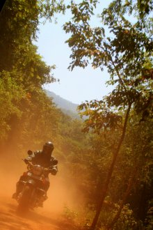

Day 1
Arrive in India and chill out for the rest of the day, meet the team in the evening


Donations to date £ 3425
Donated items 751
 Leave a message.
Leave a message.Safe flight Gav - see you in Hong Kong baby!!
Janey x x x 25-03-2007
Bev - I can confirm that Delhi Belly is alive and kicking (literally) throughout India :(
Gavin 22-03-2007
Gav - Finally got time to read your blog and its brilliant, well done on an amazing achievement and I hope the "Delhi Belly" days are behind you.
Bev 22-03-2007
Hi Gav, back from Milan fab time. Going to see Betty in hospital in Hampstead! Hope you are well- had a lovely day yesterday with Laura - but missed you! Auntie Stella is here and coming with to see Betty and sends her love and she says dinner will be w
Mum, Laura, Stella & Herbals x 19-03-2007
ps: u may be a boat captain but am not sure u r quite ready for the Queen Mary 2!
dani 13-03-2007
Arrive in India and chill out for the rest of the day, meet the team in the evening
Warm up day, this day enables you to get used to the Indian traffic and the idiosyncrasies of the Royal Enfield.

Today is designed to break us all in gently, this rally stage sees us tackle a beautiful and demanding stretch of the western Ghat mountain range on our way to Palolem, our first nights destination. Palolem is one of Indias most beautiful beach resorts; During the riding day you will encounter mountains every bit as spectacular as the Himalayas, just with lots and lots of forest and no snow peaks, due to the reduced altitude. Today is short in length to give us all a chance to build confidence. It is a stunning and remote ride. Get ready for very rough accomodation and a breathtaking location tonight - the rally has begun.
The second day is longer and more demanding but feels no harder due to the fact you are becoming more confident on your bike and the forest trails and mountain passes are becoming less daunting. Today's ride is quite simply mind-blowing as we wind our way on and off road all the way over the mountains and back to our nights stop point at a truly secret cove, looking out to the Arabian sea.
Today we start off with a short stretch of highway, which by Indian standards is very quiet, we then take some beautiful winding roads up the mountains stopping for lunch at Indias highest waterfall; Jog Falls. Once you're refreshed we'll crack on towards our final nights stop, a bustling Indian city of Shimoga. Shimoga sees no tourists whatsoever, and therein lies it's fascination for us - it is one of the rare places on earth you can see a city totally unaffected by tourism. It is eye opening and extremely friendly, it is probably one of the only places on earth where the owner of a petrol station asks you in for a coffee
If there was an awards programme for the worlds best rides this day would be up right up there. It's so good it's almost too much for the mind to take in. We spent years finalising this day's riding and it shows. You will bike up and down roads that haven't been used by traffic for decades - at some stages we have to send a chainsaw gang in before we tackle it, as nature has taken it's hold so firmly. Cautious and progressive are the terms appropriate on these stages, as the scenery is awesome but the road conditions changeable. We finish this tough day with the sun setting behind us as we chase shadows all the way to the beach, where we take much needed rest and recuperation at a beautiful resort
An early wake up call will be tough for some to deal with this morning as the aches and pains of the last few days start to take hold. Today is another long and demanding ride as we make our way to Mysore, ancient summer seat of the Raj. Mysore is a city much more used to tourists due to it's regal status, proud history and beautiful buildings. I love Mysore as it's the sort of place that reinforces Indias surrealness. Pulling up at the lights and having a bull elephant to the right and left is a feeling I'll never get used to
Mysore to Masinagudi is a beautiful and short day's riding. For me this is my favourite area on the entire trip, it's dense tiger reserves, huge wild elephant populations and friendly villagers make this a memorable and exhilarating place to ride. It's the day's destination (and our rest spot for the next 2 nights) however that makes this such a special experience for me. The Jungle Hut guest house is nestled in the Mudumallai tiger reserve and the scenery and wildlife are out of this world. Nothing I can say here will prepare you for this place
Rest and recuperation at Jungle Hut, this off bike period will give you time to reflect on your very special surroundings. - take a safari drive, trek or visit the fascinating old British hill station of Ooty, with it's old street names such as Regents street and Charing Cross. Just being in this place is magical and many of you will not want to leave preferring to read quietly or sip a drink by the amazing pool - surrounded by high mountain peaks (and tigers)! This 2 day rest period is also good for the bikes, as it gives the mechanics a proper chance to service them after their testing ride.
We leave the beauty of Mudumallai behind and head off up the mountain to Ooty, once there we tackle one of the most amazing rides in India, another secret road that Enduro India have special permission to ride. This 'road' doesn't appear on any maps and certain stages have been closed to foreigners since the 1960's. Riding this road - and it's 100 hairpin bends is one of the most amazing and challenging stages on the rally. Don't rush it, riding on earth doesn't get much better than this. Today sees us finish at Kodaikanal. Kodaikanal was the only American hill station under British rule and still maintains a strong international presence with it's famous Kodai school. It's also set up for tourists with shopping and email facilities available. The food here is also fantastic and there are many Tibetan immigrants. The road from Palani to Kodai is one of the most memorable on earth.
Today is the best day's riding on the entire trip and will quite simply knock the breath out of your lungs with it's intense beauty. First we leave Kodai and spend 2 hours descending the beautiful and high mountain. Then we hit the stunning wildlife sanctuary of Indira Gandhi and Chinnur, with their awesome switchbacks and great tarmac. The views here are wild in the extreme, you are never far away from big cats, elephants, bears and Hyenas. After this stunning stage and just when you thought it couldn't get any better we hit the tea country and Munnar national park. This place has to be seen to be believed. I'll say no more.
Today we have a nice easy ride through the tea towards the fragrant spice plantations of Thekkady. Nestled in the most amazing tiger reserve in south India is our wonderful hotel, who will welcome you with all the charm India can muster. Today you will feel like your on holiday, and why not? - you've been suffering for your art til now. Today is a true half day and that offers you the chance to go shopping, drink a cold beer or visit the stunningly beautiful Periyar tiger reserve.
Today is an emotional day as it involves the last of our riding together. We travel past one of Indias biggest Arch Dams and tackle the tricky roads of the Idukki wildlife reserve towards our nights stop at the amazing city of Kottayam. Prepare yourself for a very emotional ride in on the now famous final stretch of Enduro India.
Today gives you the chance to rest and recuperate and gather together to look back at the the amazing two weeks you have spent together all set against the backdrop of India's 970 square kilometres Kumarakom Lake.
Early morning wake up call and transport to Cochin International Airport for your return journey.